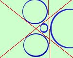

|
Un problema del genere presenta grosse difficolta' di calcolo: infatti la tangenza ad una retta si traduce in una condizione di secondo grado, quindi l'equazione risolvente sara', in questo caso, di grado 8; teoricamente e' possibile pensarlo, in pratica un problema del genere non e' assegnabile  L'equazione di ottavo grado avra' quattro soluzioni complesse e quattro soluzioni reali; alle soluzioni reali corrisponderanno le equazioni delle quattro circonferenze tangenti a tre rette non parallele nel piano |